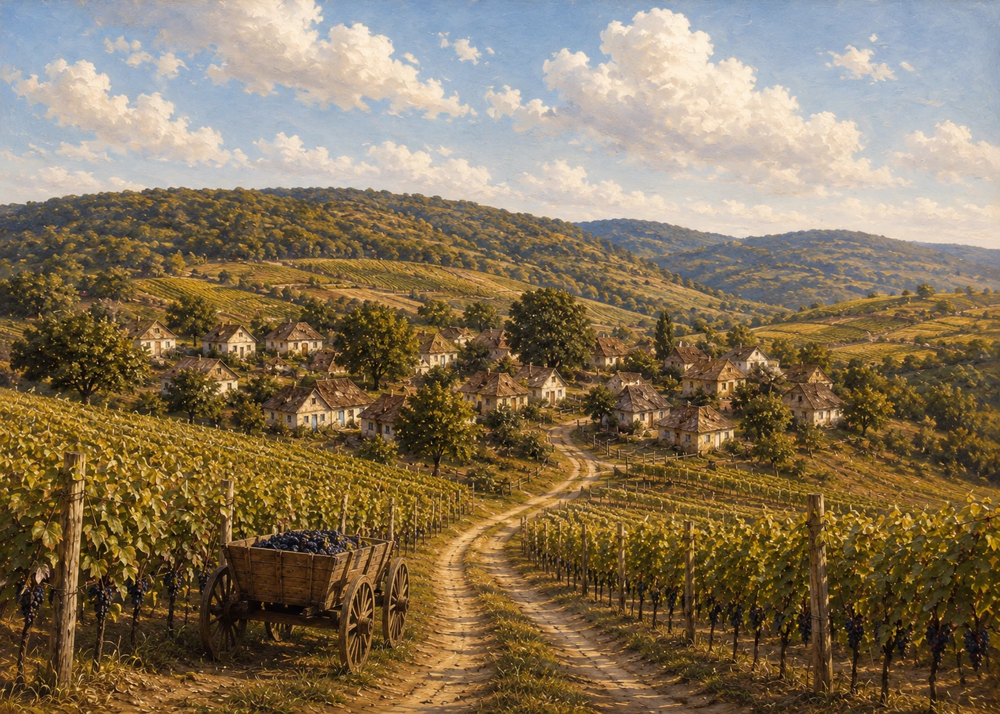
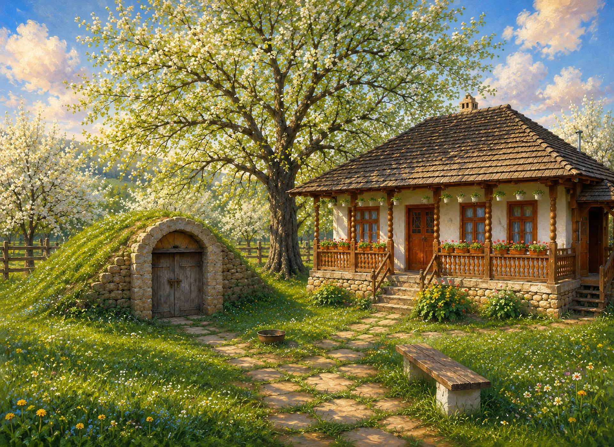
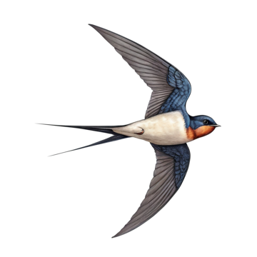
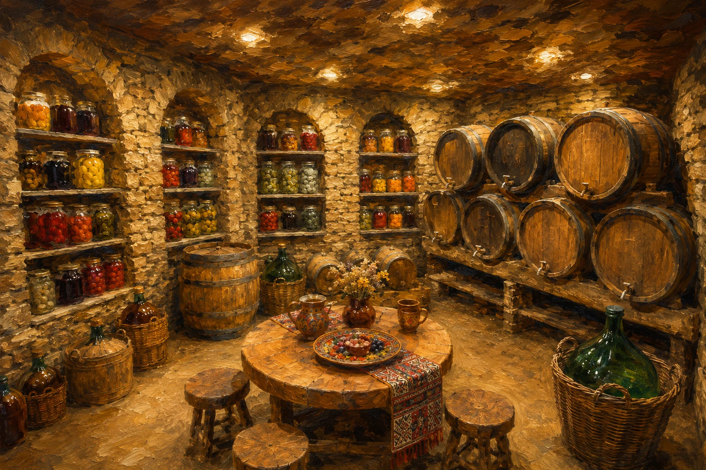

THE CELLAR DOOR
A hamlet. A hill. A cellar.
A small Moldovan place where the vines grow above stone, and the wine keeps its own time.
Browse the Wines
LIKE NO OTHERS
Nothing added.Nothing hurried.
Wild yeast. Whole grapes. Old vines. Patience. We do not correct what the year gives — we let the cellar hold it.
Eight thousand bottles a year. Each one numbered before it leaves the stone.
SEE THE WINES